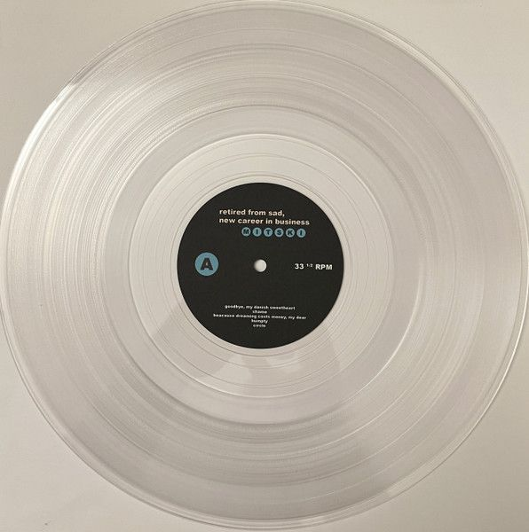

CASO CURIOSO #2: ¿Por qué los vinilos son originalmente transparentes?
Publicado el 5 de Septiembre, 2026 | Por Equipo Swag Vynil
Aunque asociamos inmediatamente los discos de vinilo con un color negro brillante, el policloruro de vinilo (PVC) utilizado para su fabricación es en realidad transparente por naturaleza.
El característico color negro proviene de un aditivo llamado negro de carbón. Los fabricantes comenzaron a añadir este pigmento para fortalecer la resistencia estructural del plástico, reducir la estática que atrae el polvo y garantizar que los micro-surcos duren cientos de reproducciones sin deformarse.
